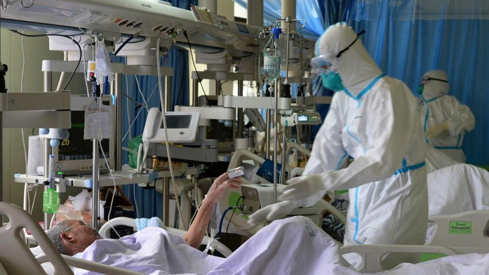

Amenaza
Mundial
El 30 de enero de 2020 la OMS declara pandemia al covid 19.
desliza 🔽

Colapso
Inminente
La mayoria de hospitales y clinicas de paises como Estados unidos, India, Brasil, Reino Unido, Rusia, Turquia y Francia estaban a punto de colapsar debido a la cantidad de contagiados que desarrollaron la enfermedad grave.
desliza 🔽

Primera
Vacuna
El 11 de Agosto de 2020 el Ministerio de Salud de la Federación Rusa aprueba la vacuna Sputnik V, desarrollada por el Centro Nacional de Investigación de Epidemiología y Microbiología Gamaleya, conviertiendose asi la primera vacuna contra el Covid 19.